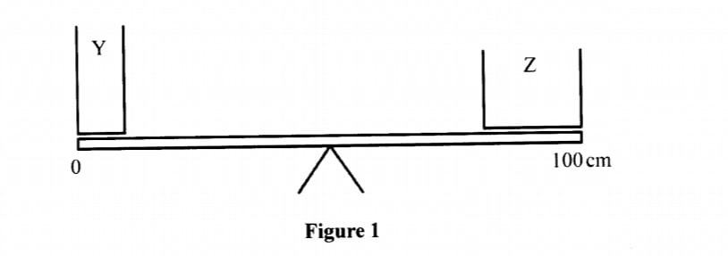
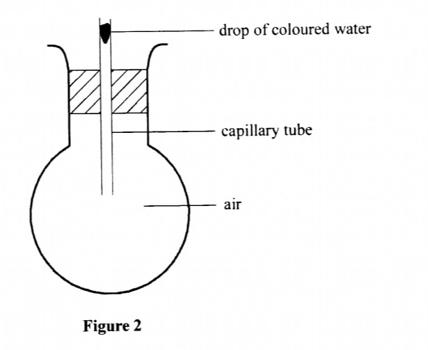
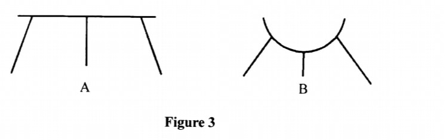
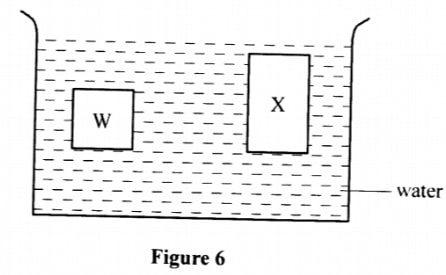
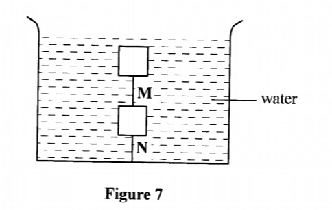
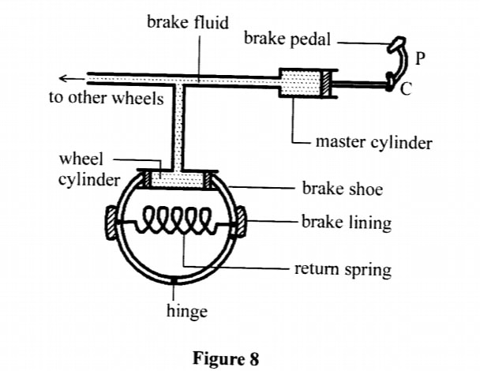
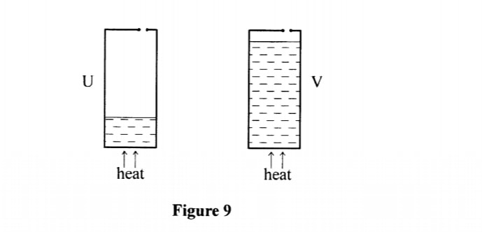
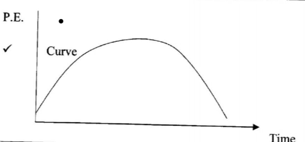
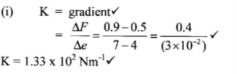

SECTION A: (25 marks)
Answer all the questions in this section in the spaces provided.
1. In order to determine the size of an oil molecule, a student performed an experiment using five oil drops to make a circular patch of the oil on the surface of water in a waterbath. State two assumptions made by the student during the calculations. (2 marks)
2. In an experiment to determine the density of Liquid R. a student obtained the followed data:
Mass of an empty density bottle = 55.0 g — Mass of the density bottle + water = 80.0 g — Mass of the density bottle + Liquid R = 70.0 g
Determine the density of Liquid R. (density of water is 1000 kgm (3 marks)
3. It is observed that when 20 cm' of alcohol is mixed with 20 cm' of water, the volume of the mixture is 39 cm'. State a reason why the volume of the mixture is not 40 cm'. (1 mark
4. When a liquid is heated in a glass flask, it is observed that the level at first goes down and then rises. Explain this observation. (2 marks)
5. Figure 1 shows a uniform wooden bar at equilibrium with two cans Y and Z of equal mass but different diameters.

The cans are simultaneously filled with equal volumes of water.
Explain the observation made. (2 marks)
6. State the reason why the speed of water at the narrow section of a river is higher than at the wider section. (1 mark)
7. .A stone is thrown .vertically upwards. Sketch a graph of potential energy (y axis) against time as the stone moves until it hits the ground. (1 mark)
8. Using the definition of impulsive force. show that F = ma (3 marks)
9. Figure 2 shows a round bottomed flask fitted with a long capillary tube containing a drop of coloured water.

The flask is immersed in ice water for sometime. State the observation made. (2 marks)
10. State one assumption for the experiments carried out to verify the gas laws. (1 mark)
11. A student who wanted to take a bath mixed 4 kg of water at 80 °C with 6 kg of water at 20 °C. Determine the final temperature of the water. (3 marks)
12. A uniform metre rule is pivoted at its centre. Two weights of 20N and 10 N are suspended at the 20cm and 100cm marks respectively. Determine the position at which a 10N weight should be suspended in order to balance the system. (3 marks)
13. Figure 3 shows two possible designs of a three legged stool.

State a reason why B is more stable than A.
14. (a) A tape attached to an accelerating trolley passes through a ticker timer that makes dots on it at a frequency of 50Hz. The ticker timer makes 10 dots on a 10cm long tape such that; the distance a between the first two dots is 0.5 cm and the distance b between the last two dots is 1.5 cm.
(i). Determine the velocity of the trolley at:
I) distance a, (4 marks)
II) distance b. (2 marks)
(ii). Determine the acceleration of the trolley
15. (a) A student was provided with several identical masses, a metre rule, a spring and a stand, boss and clamp. Outline five steps that the student should follow in order to verify Hooke's law. (5 marks)
(b) Figure 4 shows a graph that was drawn from the results obtained in an experiment to study the extension of a spring.
From the graph determine:
(i) The spring constant K. (3 marks)
(ii) The load that causes an extension of 3 x 10' m. (1 mark)
(c) Three identical springs of spring constant 100 Nm ' are arranged as shown in Figure 5 to support a 5N load.
Determine the total extention for the arrangement
16. (a) In an experiment to determine the size of an oil molecule, oil is placed on the surface of water after sprinkling lycopodium powder on it.
(i) State two reasons why oil is used. (2 marks)
(ii) State the function of the lycopodium powder. (1 mark)
(iii) State any two assumptions that are made in this experiment. (2 marks)
(iv) Explain why the oil spreads on the surface of water. (2 marks)
(b) The following data was obtained from an experiment to determine the size of a palm oil molecule.
— Volume of 100 drops of palm oil = 15.0mm3 — Area of a patch from one drop of oil = 8.0 X l04mm2
Determine the size of a palm oil molecule. (3 marks)
17. (a) State the law of flotation. (1 mark)
(b) Figure 6 shows two solids W and X made of the same material and immersed in water.

(i) State with a reason .which one of the containers experiences a greater upthrust. (2 marks)
(ii) Solid W weighs 12N in air. 2N in water and 4 N in another liquid. Determine the density of the other liquid. (3 marks)
(c) Figure 7 shows two identical wooden blocks each of mass 0.2 kg suspended in water by two strings M and N.

Given that the upthrust on each block is 3.2N, determine the tension in string: (1) M. (2 marks)
(ii) N. (2 marks)
(d) State any one application of hydrometers. (1 mark)
18. (a) The figure shows a hydraulic break system

Describe how the systems works (5 marks) (b) State three conditions necessary for a driver to negotiate a bend on a flat level road at a relatively high speed. (3 marks)
(c) Figure 9 shows two identical cans U and V each with a small opening at the top. Different amounts of water were put into the cans and heated until the water started to boil.

Explain what will be observed when both cans are then suddenly dipped into a cold waterbath. (3 marks)
1. In order to determine the size of an oil molecule, a student performed an experiment using five oil drops to make a circular patch of the oil on the surface of water in a water bath. State two assumptions made by the student during the calculations. (2 marks)
- The patch was monolayer.
- The patch was a perfect cylinder.
- Molecular diameter is uniform.
- The patch is a perfect circle.
2.
Relative density =
70 - 5580 - 55
= 0.6
Density = 0.6 x 1000
= 600kgm-3
OR
Volume of water = 25 ÷ 1 = 25cm3
therefore, Volume of R = 25cm3
Mass of R = 70 - 55 = 15g
p = m⁄v = 15⁄25 = 0.6gcm-3
- Spaces between the water molecules are occupied by the alcohol molecules.
- The flask expands first before ✓ the liquid. Then the liquid expands more.
- The wooden bar remains in equilibrium. the weight remains the same on both sides. Hence turning effect is the same✓ to the edge causing a bigger turning effect (moments)
- To conserve mass — (A1 V1 = A2V2) / ensure the volume flux is constant.

Impulse = (Ft) = change in momentum
Ft = mv - mu
F = mv - mu = m(v - u) t t
but v - u = a t
F = ma
- The drop first rises" then falls
- The gas is ideal gas
Heat lost by hot water = heat gained by cold water
4 x C x (80 - t) = 6 x C x (t - 20)
10t = 440
t = 44°C
12.
20 x 30 = 10 x 50 + y x 10
y = 600 - 500 10
= 10
= 60cm mark
14. (a)
(i) I) Va = d⁄t, t = 1 ÷ 50 = 0.02sec
= 0.5⁄0.02 = 25cms-1
(II) Vb = d⁄t
= 1.5⁄0.02 = 75cms-1
(ii) a = Vb - Va t
= 75 - 25 8 x 0.02
= 312.5cms-2
(b) State with a reason what would be observed on the spacing between the dots on the tape when the trolley is made to move on a horizontal surface. (2 marks)
- The spacing reducing with time
- The troley decelerates with time on a horizontal surface
- Hung the spring on the stand and note the position of the pointer using the metre rule.
- Suspend a mass on the spring and note the new position of the pointer.
- Increase the load in steps and record the position of the pointer for each load.
- Draw a table of weight against extension.
- Plot a graph of force against extension.

- Load = 0.38N
e = F⁄K = 5⁄100 = 0.05m for each spring
therefore, lower spring = 0.05m
Upper springs = 0.05 ÷ 2 = 0.025
Total = 0.05 + 0.025 = 0.075m
- Oil doesn't mix with water.
- Oil is less dense hence floats on the water surface. (ii) State the function of the lycopodium powder. (1 mark)
- To show boundary of the oil patch clearly, for measurements to be taken.
- The oil drops is a perfect sphere.
- The patch is monolayer.
- The oil breaks the surface tension ✓ making the patch to form a perfect circle.
Volume of 1 drop = 15⁄100 = 0.15mm2
Volume of drops = Volume of oil patch
4⁄3&pie;r3 = &pie;r2h = 15.0mm3
Thickness of molecule h = 0.15 ÷ (8.0 x 104)
= 1.875 x 10-6mm
= 1.9 x 10-6
- A floating body displaces its own weight of the fluid in which it floats.
XIt has a larger volume / Displaces a larger volume of water.
(ii)
Upthrust in liquidUpthrust in water
= 12 - 4 = 8 12 - 2 10
= 0.8kgm-3
- Tension M 3.2-2
=1.2N
- Tension in N=(3.2-2)+1.2
1.2+1.2
=2.4N
- Measuring the relative density of liquids
Describe how the systems works (5 marks)
- The driver applies a force on the pedal
- This force transmits pressure to the master cylinder fluid.
- Equal pressure is transmitted to the wheel cylinder causing the pistons of the wheel cylinder to push brake shoe hence
- Pressing the brake pads that in turn press the wheel reducing its rotation.
- When the applied force is removed, the return spring pulls back the.
shoe and pistons to the original position
(b) State three conditions necessary for a driver to negotiate a bend on a flat level road at a relatively high speed. (3 marks)
- Higher friction ( wider tyres, rougher road)
- Lower radius
- Higher mass
Explain what will be observed when both cans are then suddenly dipped into a cold water bath. (3 marks)
- U is observed to crush.
- It has more steam which when cooled creates a greater vacuum hence pressure causes collapsing.